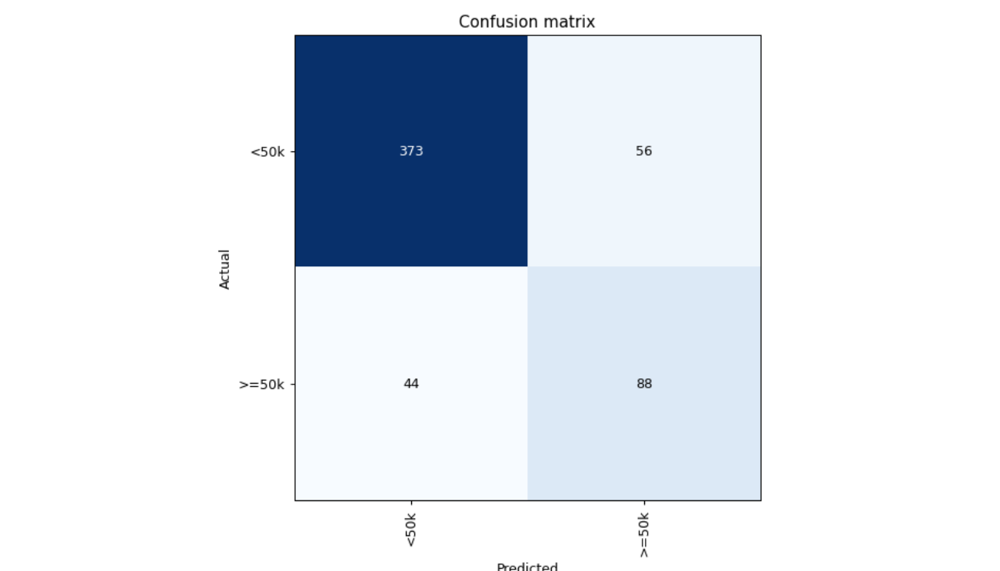
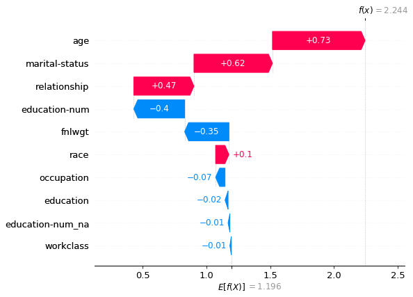
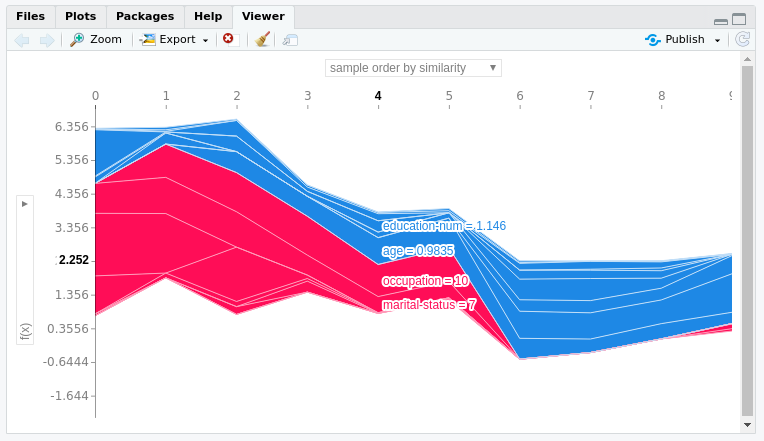
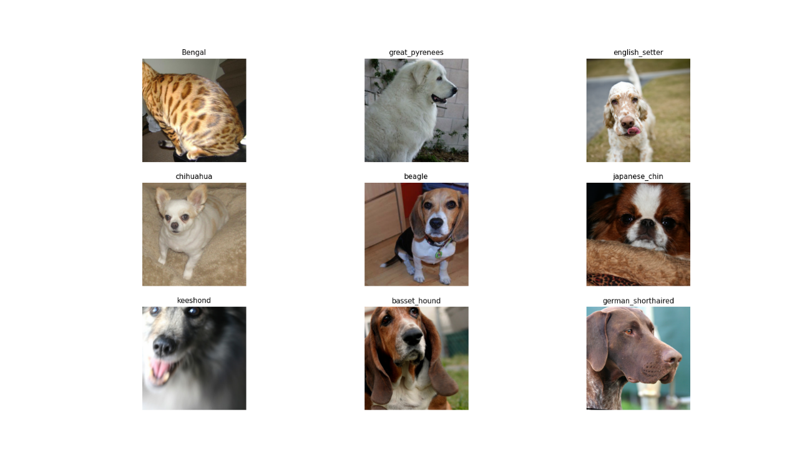
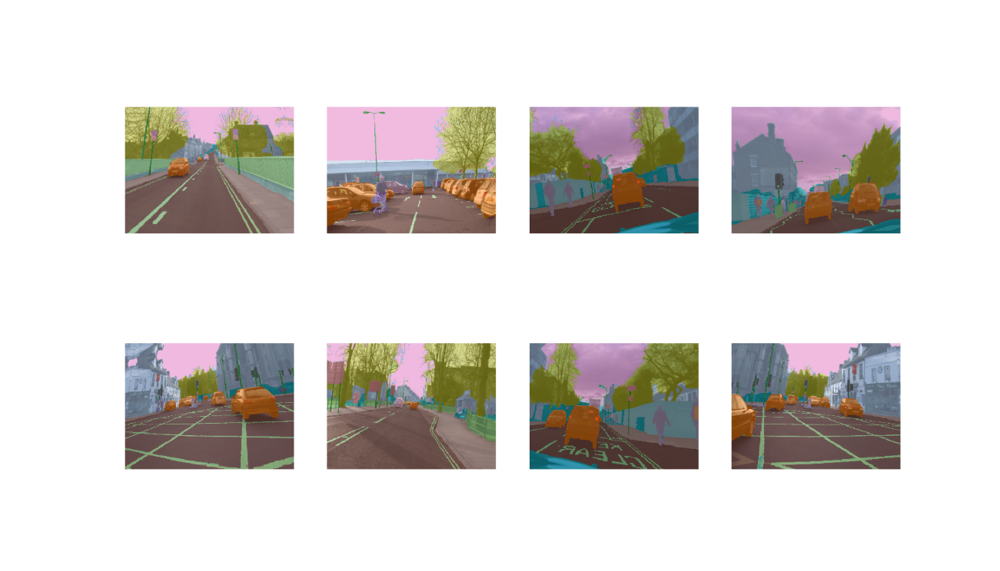

R interface to fastai
The fastai package provides R wrappers to fastai.
The fastai library simplifies training fast and accurate neural nets using modern best practices. See the fastai website to get started. The library is based on research into deep learning best practices undertaken at fast.ai, and includes “out of the box” support for vision, text, tabular, audio, time-series, object detection and collab (collaborative filtering) models.


Installation
1. Install miniconda and activate environment:
reticulate::install_miniconda()
reticulate::conda_create('r-reticulate', packages = 'python==3.6.10')2. The dev version:
devtools::install_github('henry090/fastai')3. Later, you need to install the python module fastai:
fastai::install_fastai(gpu = FALSE, cuda_version = '10.1', overwrite = FALSE)4. Restart RStudio!
Kaggle
We currently prepare the examples of usage of the fastai from R in Kaggle competitions:
- Introduction
- MNIST with Pytorch and fastai
- NLP Binary Classification
- Audio classification
- CycleGAN
- Fastai on Colab TPUs
Contributions are very welcome!
Tabular data
library(magrittr)
library(fastai)
# download
URLs_ADULT_SAMPLE()
# read data
df = data.table::fread('adult_sample/adult.csv')Variables:
dep_var = 'salary'
cat_names = c('workclass', 'education', 'marital-status', 'occupation', 'relationship', 'race')
cont_names = c('age', 'fnlwgt', 'education-num')Preprocess strategy:
procs = list(FillMissing(),Categorify(),Normalize())Prepare:
dls = TabularDataTable(df, procs, cat_names, cont_names,
y_names = dep_var, splits = list(c(1:32000),c(32001:32561))) %>%
dataloaders(bs = 64)Summary:
model = dls %>% tabular_learner(layers=c(200,100), metrics=accuracy)
model %>% summary()TabularModel (Input shape: ['64 x 7', '64 x 3'])
================================================================
Layer (type) Output Shape Param # Trainable
================================================================
Embedding 64 x 6 60 True
________________________________________________________________
Embedding 64 x 8 136 True
________________________________________________________________
Embedding 64 x 5 40 True
________________________________________________________________
Embedding 64 x 8 136 True
________________________________________________________________
Embedding 64 x 5 35 True
________________________________________________________________
Embedding 64 x 4 24 True
________________________________________________________________
Embedding 64 x 3 9 True
________________________________________________________________
Dropout 64 x 39 0 False
________________________________________________________________
BatchNorm1d 64 x 3 6 True
________________________________________________________________
BatchNorm1d 64 x 42 84 True
________________________________________________________________
Linear 64 x 200 8,400 True
________________________________________________________________
ReLU 64 x 200 0 False
________________________________________________________________
BatchNorm1d 64 x 200 400 True
________________________________________________________________
Linear 64 x 100 20,000 True
________________________________________________________________
ReLU 64 x 100 0 False
________________________________________________________________
Linear 64 x 2 202 True
________________________________________________________________
Total params: 29,532
Total trainable params: 29,532
Total non-trainable params: 0
Optimizer used: <function Adam at 0x7fa246283598>
Loss function: FlattenedLoss of CrossEntropyLoss()
Callbacks:
- TrainEvalCallback
- Recorder
- ProgressCallbackBefore fitting try to find optimal learning rate:
model %>% lr_find()
model %>% plot_lr_find(dpi = 200)
Run:
model %>% fit(5, lr = 10^-1)epoch train_loss valid_loss accuracy time
0 0.360149 0.329587 0.846702 00:04
1 0.352106 0.345761 0.828877 00:04
2 0.368743 0.340913 0.844920 00:05
3 0.347277 0.333084 0.852050 00:04
4 0.348969 0.350707 0.830660 00:04Plot loss history:
model %>% plot_loss(dpi = 200)
At the same time, users can find optimal batch size.
Implementation of OpenAI paper “An Empirical Model of Large-Batch Training” for Fastai was done by hal-314:
bss = model %>% bs_find(lr=1e-3)
model %>% plot_bs_find()See training process:

Get confusion matrix:
model %>% get_confusion_matrix() <50k >=50k
<50k 407 22
>=50k 68 64Plot it:
interp = ClassificationInterpretation_from_learner(model)
interp %>% plot_confusion_matrix(dpi = 90,figsize = c(6,6))
Get predictions on new data:
> model %>% predict(df[10:15,])
<50k >=50k classes
1 0.5108562 0.4891439 0
2 0.4827824 0.5172176 1
3 0.4873166 0.5126833 1
4 0.5013804 0.4986197 0
5 0.4964157 0.5035844 1
6 0.5111378 0.4888622 0Fastinference by Zachary Mueller has ShapInterpretation function that allows to utilize various methods within the SHAP interpretation library. Currently summary_plot, dependence_plot, waterfall_plot, force_plot, and decision_plot are supported.
First, get explanation object:
exp = ShapInterpretation(model,n_samples = 20)
# 100%|██████████| 20/20 [02:49<00:00, 8.46s/it]Then, visualize decision plot:
exp %>% decision_plot(class_id = 1, row_idx = 2)Dependence plot:
exp %>% dependence_plot('age', class_id = 0)Summary plot:
exp %>% summary_plot()Waterfall plot:
exp %>% waterfall_plot(row_idx=10)
Force (JS) plot:
exp %>% force_plot(class_id = 0)
Image data
Get Pets dataset:
URLs_PETS()Define path to folders:
path = 'oxford-iiit-pet'
path_anno = 'oxford-iiit-pet/annotations'
path_img = 'oxford-iiit-pet/images'
fnames = get_image_files(path_img)See one of examples:
fnames[1]
oxford-iiit-pet/images/american_pit_bull_terrier_129.jpgDataloader:
dls = ImageDataLoaders_from_name_re(
path, fnames, pat='(.+)_\\d+.jpg$',
item_tfms=Resize(size = 460), bs = 10,
batch_tfms=list(aug_transforms(size = 224, min_scale = 0.75),
Normalize_from_stats( imagenet_stats() )
)
)Show batch for visualization:
dls %>% show_batch(dpi = 150)
Model architecture:
learn = cnn_learner(dls, resnet34(), metrics = error_rate)And fit:
learn %>% fit_one_cycle(n_epoch = 2)
epoch train_loss valid_loss error_rate time
0 0.904872 0.317927 0.105548 00:35
1 0.694395 0.239520 0.083897 00:36Get confusion matrix and plot:
conf = learn %>% get_confusion_matrix()
library(highcharter)
hchart(conf, label = TRUE) %>%
hc_yAxis(title = list(text = 'Actual')) %>%
hc_xAxis(title = list(text = 'Predicted'),
labels = list(rotation = -90))
Note that the plot is built with highcharter.
Plot top losses:
interp = ClassificationInterpretation_from_learner(learn)
interp %>% plot_top_losses(k = 9, figsize = c(15,11))
Alternatively, load images from folders:
# get sample data
URLs_MNIST_SAMPLE()
# transformations
tfms = aug_transforms(do_flip = FALSE)
path = 'mnist_sample'
bs = 20
#load into memory
data = ImageDataLoaders_from_folder(path, batch_tfms = tfms, size = 26, bs = bs)
# Visualize and train
data %>% show_batch(dpi = 150)
learn = cnn_learner(data, resnet18(), metrics = accuracy)
learn %>% fit(2)
What about the implementation of the latest Computer Vision models?
There is a function in fastai timm_learner which originally written by Zachary Mueller. It helps to quickly load the pretrained models from timm library.
First, lets’s see the list of available models (TOP 10):
> str(as.list(timm_list_models()[1:10]))
List of 10
$ : chr "adv_inception_v3"
$ : chr "cspdarknet53"
$ : chr "cspdarknet53_iabn"
$ : chr "cspresnet50"
$ : chr "cspresnet50d"
$ : chr "cspresnet50w"
$ : chr "cspresnext50"
$ : chr "cspresnext50_iabn"
$ : chr "darknet53"
$ : chr "densenet121"Exciting!
Now, load and train pets dataset:
library(magrittr)
library(fastai)
path = 'oxford-iiit-pet'
path_img = 'oxford-iiit-pet/images'
fnames = get_image_files(path_img)
dls = ImageDataLoaders_from_name_re(
path, fnames, pat='(.+)_\\d+.jpg$',
item_tfms=Resize(size = 460), bs = 10,
batch_tfms=list(aug_transforms(size = 224, min_scale = 0.75),
Normalize_from_stats( imagenet_stats() )
)
)
learn = timm_learner(dls, 'cspdarknet53', metrics = list(accuracy, error_rate))
learn %>% summary()Model summary
Sequential (Input shape: ['10 x 3 x 224 x 224'])
================================================================
Layer (type) Output Shape Param # Trainable
================================================================
Conv2d 10 x 32 x 224 x 224 864 False
________________________________________________________________
LeakyReLU 10 x 32 x 224 x 224 0 False
________________________________________________________________
Conv2d 10 x 64 x 112 x 112 18,432 False
________________________________________________________________
LeakyReLU 10 x 64 x 112 x 112 0 False
________________________________________________________________
Conv2d 10 x 128 x 112 x 11 8,192 False
________________________________________________________________
LeakyReLU 10 x 128 x 112 x 11 0 False
________________________________________________________________
Conv2d 10 x 32 x 112 x 112 2,048 False
________________________________________________________________
LeakyReLU 10 x 32 x 112 x 112 0 False
________________________________________________________________
Conv2d 10 x 64 x 112 x 112 18,432 False
________________________________________________________________
LeakyReLU 10 x 64 x 112 x 112 0 False
________________________________________________________________
Conv2d 10 x 64 x 112 x 112 4,096 False
________________________________________________________________
LeakyReLU 10 x 64 x 112 x 112 0 False
________________________________________________________________
Conv2d 10 x 64 x 112 x 112 8,192 False
________________________________________________________________
LeakyReLU 10 x 64 x 112 x 112 0 False
________________________________________________________________
Conv2d 10 x 128 x 56 x 56 73,728 False
________________________________________________________________
LeakyReLU 10 x 128 x 56 x 56 0 False
________________________________________________________________
Conv2d 10 x 128 x 56 x 56 16,384 False
________________________________________________________________
LeakyReLU 10 x 128 x 56 x 56 0 False
________________________________________________________________
Conv2d 10 x 64 x 56 x 56 4,096 False
________________________________________________________________
LeakyReLU 10 x 64 x 56 x 56 0 False
________________________________________________________________
Conv2d 10 x 64 x 56 x 56 36,864 False
________________________________________________________________
LeakyReLU 10 x 64 x 56 x 56 0 False
________________________________________________________________
Conv2d 10 x 64 x 56 x 56 4,096 False
________________________________________________________________
LeakyReLU 10 x 64 x 56 x 56 0 False
________________________________________________________________
Conv2d 10 x 64 x 56 x 56 36,864 False
________________________________________________________________
LeakyReLU 10 x 64 x 56 x 56 0 False
________________________________________________________________
Conv2d 10 x 64 x 56 x 56 4,096 False
________________________________________________________________
LeakyReLU 10 x 64 x 56 x 56 0 False
________________________________________________________________
Conv2d 10 x 128 x 56 x 56 16,384 False
________________________________________________________________
LeakyReLU 10 x 128 x 56 x 56 0 False
________________________________________________________________
Conv2d 10 x 256 x 28 x 28 294,912 False
________________________________________________________________
LeakyReLU 10 x 256 x 28 x 28 0 False
________________________________________________________________
Conv2d 10 x 256 x 28 x 28 65,536 False
________________________________________________________________
LeakyReLU 10 x 256 x 28 x 28 0 False
________________________________________________________________
Conv2d 10 x 128 x 28 x 28 16,384 False
________________________________________________________________
LeakyReLU 10 x 128 x 28 x 28 0 False
________________________________________________________________
Conv2d 10 x 128 x 28 x 28 147,456 False
________________________________________________________________
LeakyReLU 10 x 128 x 28 x 28 0 False
________________________________________________________________
Conv2d 10 x 128 x 28 x 28 16,384 False
________________________________________________________________
LeakyReLU 10 x 128 x 28 x 28 0 False
________________________________________________________________
Conv2d 10 x 128 x 28 x 28 147,456 False
________________________________________________________________
LeakyReLU 10 x 128 x 28 x 28 0 False
________________________________________________________________
Conv2d 10 x 128 x 28 x 28 16,384 False
________________________________________________________________
LeakyReLU 10 x 128 x 28 x 28 0 False
________________________________________________________________
Conv2d 10 x 128 x 28 x 28 147,456 False
________________________________________________________________
LeakyReLU 10 x 128 x 28 x 28 0 False
________________________________________________________________
Conv2d 10 x 128 x 28 x 28 16,384 False
________________________________________________________________
LeakyReLU 10 x 128 x 28 x 28 0 False
________________________________________________________________
Conv2d 10 x 128 x 28 x 28 147,456 False
________________________________________________________________
LeakyReLU 10 x 128 x 28 x 28 0 False
________________________________________________________________
Conv2d 10 x 128 x 28 x 28 16,384 False
________________________________________________________________
LeakyReLU 10 x 128 x 28 x 28 0 False
________________________________________________________________
Conv2d 10 x 128 x 28 x 28 147,456 False
________________________________________________________________
LeakyReLU 10 x 128 x 28 x 28 0 False
________________________________________________________________
Conv2d 10 x 128 x 28 x 28 16,384 False
________________________________________________________________
LeakyReLU 10 x 128 x 28 x 28 0 False
________________________________________________________________
Conv2d 10 x 128 x 28 x 28 147,456 False
________________________________________________________________
LeakyReLU 10 x 128 x 28 x 28 0 False
________________________________________________________________
Conv2d 10 x 128 x 28 x 28 16,384 False
________________________________________________________________
LeakyReLU 10 x 128 x 28 x 28 0 False
________________________________________________________________
Conv2d 10 x 128 x 28 x 28 147,456 False
________________________________________________________________
LeakyReLU 10 x 128 x 28 x 28 0 False
________________________________________________________________
Conv2d 10 x 128 x 28 x 28 16,384 False
________________________________________________________________
LeakyReLU 10 x 128 x 28 x 28 0 False
________________________________________________________________
Conv2d 10 x 128 x 28 x 28 147,456 False
________________________________________________________________
LeakyReLU 10 x 128 x 28 x 28 0 False
________________________________________________________________
Conv2d 10 x 128 x 28 x 28 16,384 False
________________________________________________________________
LeakyReLU 10 x 128 x 28 x 28 0 False
________________________________________________________________
Conv2d 10 x 256 x 28 x 28 65,536 False
________________________________________________________________
LeakyReLU 10 x 256 x 28 x 28 0 False
________________________________________________________________
Conv2d 10 x 512 x 14 x 14 1,179,648 False
________________________________________________________________
LeakyReLU 10 x 512 x 14 x 14 0 False
________________________________________________________________
Conv2d 10 x 512 x 14 x 14 262,144 False
________________________________________________________________
LeakyReLU 10 x 512 x 14 x 14 0 False
________________________________________________________________
Conv2d 10 x 256 x 14 x 14 65,536 False
________________________________________________________________
LeakyReLU 10 x 256 x 14 x 14 0 False
________________________________________________________________
Conv2d 10 x 256 x 14 x 14 589,824 False
________________________________________________________________
LeakyReLU 10 x 256 x 14 x 14 0 False
________________________________________________________________
Conv2d 10 x 256 x 14 x 14 65,536 False
________________________________________________________________
LeakyReLU 10 x 256 x 14 x 14 0 False
________________________________________________________________
Conv2d 10 x 256 x 14 x 14 589,824 False
________________________________________________________________
LeakyReLU 10 x 256 x 14 x 14 0 False
________________________________________________________________
Conv2d 10 x 256 x 14 x 14 65,536 False
________________________________________________________________
LeakyReLU 10 x 256 x 14 x 14 0 False
________________________________________________________________
Conv2d 10 x 256 x 14 x 14 589,824 False
________________________________________________________________
LeakyReLU 10 x 256 x 14 x 14 0 False
________________________________________________________________
Conv2d 10 x 256 x 14 x 14 65,536 False
________________________________________________________________
LeakyReLU 10 x 256 x 14 x 14 0 False
________________________________________________________________
Conv2d 10 x 256 x 14 x 14 589,824 False
________________________________________________________________
LeakyReLU 10 x 256 x 14 x 14 0 False
________________________________________________________________
Conv2d 10 x 256 x 14 x 14 65,536 False
________________________________________________________________
LeakyReLU 10 x 256 x 14 x 14 0 False
________________________________________________________________
Conv2d 10 x 256 x 14 x 14 589,824 False
________________________________________________________________
LeakyReLU 10 x 256 x 14 x 14 0 False
________________________________________________________________
Conv2d 10 x 256 x 14 x 14 65,536 False
________________________________________________________________
LeakyReLU 10 x 256 x 14 x 14 0 False
________________________________________________________________
Conv2d 10 x 256 x 14 x 14 589,824 False
________________________________________________________________
LeakyReLU 10 x 256 x 14 x 14 0 False
________________________________________________________________
Conv2d 10 x 256 x 14 x 14 65,536 False
________________________________________________________________
LeakyReLU 10 x 256 x 14 x 14 0 False
________________________________________________________________
Conv2d 10 x 256 x 14 x 14 589,824 False
________________________________________________________________
LeakyReLU 10 x 256 x 14 x 14 0 False
________________________________________________________________
Conv2d 10 x 256 x 14 x 14 65,536 False
________________________________________________________________
LeakyReLU 10 x 256 x 14 x 14 0 False
________________________________________________________________
Conv2d 10 x 256 x 14 x 14 589,824 False
________________________________________________________________
LeakyReLU 10 x 256 x 14 x 14 0 False
________________________________________________________________
Conv2d 10 x 256 x 14 x 14 65,536 False
________________________________________________________________
LeakyReLU 10 x 256 x 14 x 14 0 False
________________________________________________________________
Conv2d 10 x 512 x 14 x 14 262,144 False
________________________________________________________________
LeakyReLU 10 x 512 x 14 x 14 0 False
________________________________________________________________
Conv2d 10 x 1024 x 7 x 7 4,718,592 False
________________________________________________________________
LeakyReLU 10 x 1024 x 7 x 7 0 False
________________________________________________________________
Conv2d 10 x 1024 x 7 x 7 1,048,576 False
________________________________________________________________
LeakyReLU 10 x 1024 x 7 x 7 0 False
________________________________________________________________
Conv2d 10 x 512 x 7 x 7 262,144 False
________________________________________________________________
LeakyReLU 10 x 512 x 7 x 7 0 False
________________________________________________________________
Conv2d 10 x 512 x 7 x 7 2,359,296 False
________________________________________________________________
LeakyReLU 10 x 512 x 7 x 7 0 False
________________________________________________________________
Conv2d 10 x 512 x 7 x 7 262,144 False
________________________________________________________________
LeakyReLU 10 x 512 x 7 x 7 0 False
________________________________________________________________
Conv2d 10 x 512 x 7 x 7 2,359,296 False
________________________________________________________________
LeakyReLU 10 x 512 x 7 x 7 0 False
________________________________________________________________
Conv2d 10 x 512 x 7 x 7 262,144 False
________________________________________________________________
LeakyReLU 10 x 512 x 7 x 7 0 False
________________________________________________________________
Conv2d 10 x 512 x 7 x 7 2,359,296 False
________________________________________________________________
LeakyReLU 10 x 512 x 7 x 7 0 False
________________________________________________________________
Conv2d 10 x 512 x 7 x 7 262,144 False
________________________________________________________________
LeakyReLU 10 x 512 x 7 x 7 0 False
________________________________________________________________
Conv2d 10 x 512 x 7 x 7 2,359,296 False
________________________________________________________________
LeakyReLU 10 x 512 x 7 x 7 0 False
________________________________________________________________
Conv2d 10 x 512 x 7 x 7 262,144 False
________________________________________________________________
LeakyReLU 10 x 512 x 7 x 7 0 False
________________________________________________________________
Conv2d 10 x 1024 x 7 x 7 1,048,576 False
________________________________________________________________
LeakyReLU 10 x 1024 x 7 x 7 0 False
________________________________________________________________
AdaptiveAvgPool2d 10 x 1024 x 1 x 1 0 False
________________________________________________________________
AdaptiveMaxPool2d 10 x 1024 x 1 x 1 0 False
________________________________________________________________
Flatten 10 x 2048 0 False
________________________________________________________________
BatchNorm1d 10 x 2048 4,096 True
________________________________________________________________
Dropout 10 x 2048 0 False
________________________________________________________________
Linear 10 x 512 1,048,576 True
________________________________________________________________
ReLU 10 x 512 0 False
________________________________________________________________
BatchNorm1d 10 x 512 1,024 True
________________________________________________________________
Dropout 10 x 512 0 False
________________________________________________________________
Linear 10 x 37 18,944 True
________________________________________________________________
Total params: 27,654,496
Total trainable params: 1,072,640
Total non-trainable params: 26,581,856
Optimizer used: <function Adam at 0x7fc1cfc16f28>
Loss function: FlattenedLoss of CrossEntropyLoss()
Model frozen up to parameter group #1
Callbacks:
- TrainEvalCallback
- Recorder
- ProgressCallbackAnd finally, fit:
learn %>% fit_one_cycle(3)epoch train_loss valid_loss accuracy error_rate time
------ ----------- ----------- --------- ----------- ------
0 1.206384 0.518956 0.847091 0.152909 01:00
1 0.841627 0.411970 0.890392 0.109608 00:58
2 0.657220 0.328548 0.899188 0.100812 00:59
See results:
learn %>% show_results()Impressive!

GAN example
Get data (4,4 GB):
URLs_LSUN_BEDROOMS()
path = 'bedroom'Dataloader function:
get_dls <- function(bs, size) {
dblock = DataBlock(blocks = list(TransformBlock(), ImageBlock()),
get_x = generate_noise(),
get_items = get_image_files(),
splitter = IndexSplitter(c()),
item_tfms = Resize(size, method = "crop"),
batch_tfms = Normalize_from_stats(c(0.5,0.5,0.5), c(0.5,0.5,0.5))
)
dblock %>% dataloaders(source = path, path = path,bs = bs)
}
dls = get_dls(128, 64)Generator and discriminator:
generator = basic_generator(out_size = 64, n_channels = 3, n_extra_layers = 1)
critic = basic_critic(in_size = 64, n_channels = 3, n_extra_layers = 1,
act_cls = partial(nn$LeakyReLU, negative_slope = 0.2))
Model:
learn = GANLearner_wgan(dls, generator, critic, opt_func = partial(Adam(), mom=0.))And fit:
learn$recorder$train_metrics = TRUE
learn$recorder$valid_metrics = FALSE
learn %>% fit(1, 2e-4, wd = 0)epoch train_loss gen_loss crit_loss time
0 -0.555554 0.516327 -0.967604 05:06This is the result for 1 epoch.
learn %>% show_results(max_n = 16, figsize = c(8,8), ds_idx=0)
CycleGAN
CycleGAN package by Tanishq Abraham makes building and training a CycleGAN model very easy
Get data:
URLs_HORSE_2_ZEBRA()Prepare data:
horse2zebra = 'horse2zebra'
trainA_path = file.path(horse2zebra,'trainA')
trainB_path = file.path(horse2zebra,'trainB')
testA_path = file.path(horse2zebra,'testA')
testB_path = file.path(horse2zebra,'testB')
dls = get_dls(trainA_path, trainB_path, num_A = 130,load_size = 270,crop_size = 144,bs=4)
Build model:
cycle_gan = CycleGAN(3,3,64)
learn = cycle_learner(dls, cycle_gan)And fit:
learn %>% fit_flat_lin(4,4,2e-4)epoch train_loss id_loss_A id_loss_B gen_loss_A gen_loss_B cyc_loss_A cyc_loss_B D_A_loss D_B_loss time
------ ----------- ---------- ---------- ----------- ----------- ----------- ----------- --------- --------- -----
0 10.500859 1.551905 1.678394 0.375322 0.385088 3.266770 3.509404 0.367762 0.367762 00:19
1 9.547493 1.267837 1.453950 0.301558 0.298583 2.698074 3.106223 0.253554 0.253554 00:19
2 8.938786 1.234537 1.250279 0.328651 0.328309 2.618085 2.713281 0.237375 0.237375 00:19
3 8.391484 1.066745 1.227453 0.327970 0.336748 2.285323 2.669749 0.240033 0.240033 00:19
4 7.642654 0.941413 1.057014 0.327448 0.350729 1.980680 2.274255 0.246695 0.246695 00:19
5 7.478543 0.966484 1.111054 0.291666 0.384912 2.119692 2.446879 0.251393 0.251393 00:18
6 7.190168 0.961237 1.034505 0.315916 0.397697 1.990408 2.182239 0.222851 0.222851 00:19
7 6.902316 0.891176 1.001932 0.343578 0.386471 1.848317 2.137690 0.215832 0.215832 00:19Get predicitons and see results:
learn %>% get_preds_cyclegan(testA_path, './h2z-preds')
learn %>% show_results()Unet example
Call libraries:
library(fastai)
library(magrittr)Get data
URLs_CAMVID()Specify folders:
path = 'camvid'
fnames = get_image_files(paste(path,'images',sep = '/'))
lbl_names = get_image_files(paste(path,'labels',sep = '/'))
codes = data.table::fread(paste(path,'codes.txt',sep = '/'), header = FALSE)[['V1']]
valid_fnames = data.table::fread(paste(path,'valid.txt',sep = '/'),header = FALSE)[['V1']]
# batch size
bs = 8Define a loader object:
camvid = DataBlock(blocks = c(ImageBlock(), MaskBlock(codes)),
get_items = get_image_files,
splitter = FileSplitter('camvid/valid.txt'),
get_y = function(x) {paste('camvid/labels/',x$stem,'_P',x$suffix,sep = '')},
batch_tfms = list(aug_transforms(size = list(200,266)),
Normalize_from_stats( imagenet_stats() )
)
)
# prefix and suffix of the name of the file
x$stem; x$suffixDataloader object and list of labels:
dls = camvid %>% dataloaders(source = "camvid/images", bs = bs, path = path)
dls %>% show_batch()
void_code = which(codes == "Void")
dls$vocab = codes
name2id = as.list(1:(length(codes)))
names(name2id) = codes
str(name2id)
List of 32
$ Animal : int 1
$ Archway : int 2
$ Bicyclist : int 3
$ Bridge : int 4
$ Building : int 5
$ Car : int 6
$ CartLuggagePram : int 7
$ Child : int 8
$ Column_Pole : int 9
$ Fence : int 10
$ LaneMkgsDriv : int 11
$ LaneMkgsNonDriv : int 12
$ Misc_Text : int 13
$ MotorcycleScooter: int 14
$ OtherMoving : int 15
$ ParkingBlock : int 16
$ Pedestrian : int 17
$ Road : int 18
$ RoadShoulder : int 19
$ Sidewalk : int 20
$ SignSymbol : int 21
$ Sky : int 22
$ SUVPickupTruck : int 23
$ TrafficCone : int 24
$ TrafficLight : int 25
$ Train : int 26
$ Tree : int 27
$ Truck_Bus : int 28
$ Tunnel : int 29
$ VegetationMisc : int 30
$ Void : int 31
$ Wall : int 32Custom accuracy function:
acc_camvid <- function(input, target) {
target = target$squeeze(1L)
# exclude/filter void label
mask = target != void_code
return(
(input$argmax(dim=1L)[mask]$eq(target[mask])) %>%
float() %>% mean()
)
}
attr(acc_camvid, "py_function_name") <- 'acc_camvid'Debug acc_camvid manually
batch = dls %>% one_batch(convert = FALSE)[[1]]
TensorImage([[[[-1.4419e+00, -1.3117e+00, -1.1976e+00, ..., 2.2489e+00,
2.2238e+00, 2.0948e+00],
[-1.5401e+00, -1.5213e+00, -1.4010e+00, ..., 1.9834e+00,
2.2378e+00, 2.2173e+00],
[-1.6401e+00, -1.5477e+00, -1.5588e+00, ..., 9.1953e-01,
1.9501e+00, 1.1138e+00],
...,
[-1.6852e+00, -1.5440e+00, -1.5132e+00, ..., -1.0596e+00,
-1.0711e+00, -1.0674e+00],
[-1.5265e+00, -1.6030e+00, -1.5804e+00, ..., -1.0268e+00,
-1.0946e+00, -1.1181e+00],
[-1.5423e+00, -1.5516e+00, -1.6014e+00, ..., -1.1734e+00,
-1.1293e+00, -1.0777e+00]],
[[-1.3446e+00, -1.2023e+00, -1.0470e+00, ..., 2.4286e+00,
2.4090e+00, 2.2977e+00],
[-1.4481e+00, -1.4276e+00, -1.2930e+00, ..., 2.1422e+00,
2.4158e+00, 2.3778e+00],
[-1.5607e+00, -1.4584e+00, -1.4641e+00, ..., 1.0026e+00,
2.0258e+00, 1.1376e+00],
...,
[-1.5809e+00, -1.4399e+00, -1.4133e+00, ..., -7.8931e-01,
-7.9807e-01, -7.9637e-01],
[-1.4161e+00, -1.4909e+00, -1.4646e+00, ..., -8.0615e-01,
-8.5201e-01, -8.5311e-01],
[-1.4472e+00, -1.4567e+00, -1.5077e+00, ..., -9.4607e-01,
-8.9744e-01, -8.2074e-01]],
[[-1.1164e+00, -1.0162e+00, -9.1189e-01, ..., 2.6257e+00,
2.5726e+00, 2.4016e+00],
[-1.2195e+00, -1.1752e+00, -1.0595e+00, ..., 2.3488e+00,
2.6271e+00, 2.5764e+00],
[-1.3316e+00, -1.2451e+00, -1.2400e+00, ..., 1.0476e+00,
2.1812e+00, 1.3635e+00],
...,
[-1.2881e+00, -1.1393e+00, -1.1035e+00, ..., -3.8940e-01,
-4.0598e-01, -3.9861e-01],
[-1.1427e+00, -1.2167e+00, -1.1906e+00, ..., -3.6462e-01,
-4.3055e-01, -4.5333e-01],
[-1.1525e+00, -1.1651e+00, -1.2190e+00, ..., -4.8259e-01,
-4.3712e-01, -4.1413e-01]]],
[[[-2.0552e-01, 3.9563e-01, 4.0691e-01, ..., -9.7342e-01,
-7.8957e-01, -7.6035e-01],
[-3.8852e-01, 4.2912e-01, 4.4469e-01, ..., -1.0449e+00,
-8.5347e-01, -7.5299e-01],
[ 3.5939e-01, 3.6353e-01, 4.7028e-01, ..., -9.3101e-01,
-8.7398e-01, -7.9327e-01],
...,
[-1.0510e+00, -1.0661e+00, -9.6690e-01, ..., -1.3688e+00,
-1.4543e+00, -1.4645e+00],
[-1.0578e+00, -1.0939e+00, -9.3117e-01, ..., -1.3939e+00,
-1.4033e+00, -1.4209e+00],
[-9.9012e-01, -1.0312e+00, -1.0074e+00, ..., -1.4274e+00,
-1.3829e+00, -1.3758e+00]],
[[ 6.0090e-02, 7.8124e-01, 7.5145e-01, ..., -8.2881e-01,
-6.7773e-01, -6.3718e-01],
[-1.7114e-01, 7.8613e-01, 7.8531e-01, ..., -9.0003e-01,
-7.3661e-01, -5.8707e-01],
[ 7.3440e-01, 7.5691e-01, 8.2297e-01, ..., -8.0694e-01,
-7.5451e-01, -6.2783e-01],
...,
[-7.8971e-01, -7.8585e-01, -7.4870e-01, ..., -1.2630e+00,
-1.3108e+00, -1.3046e+00],
[-7.8414e-01, -7.9617e-01, -7.2847e-01, ..., -1.2297e+00,
-1.2414e+00, -1.2594e+00],
[-7.3135e-01, -7.7442e-01, -7.4849e-01, ..., -1.2259e+00,
-1.1889e+00, -1.2022e+00]],
[[ 4.4920e-01, 1.2392e+00, 1.3399e+00, ..., -6.0991e-01,
-4.5250e-01, -4.4251e-01],
[ 2.7577e-01, 1.2913e+00, 1.3755e+00, ..., -6.8060e-01,
-5.1114e-01, -3.7442e-01],
[ 1.0632e+00, 1.3052e+00, 1.3774e+00, ..., -5.8343e-01,
-5.2787e-01, -3.9803e-01],
...,
[-4.4165e-01, -4.4558e-01, -3.8942e-01, ..., -8.7048e-01,
-9.2835e-01, -9.2750e-01],
[-4.4233e-01, -4.6348e-01, -3.7176e-01, ..., -8.6960e-01,
-8.8080e-01, -8.9788e-01],
[-3.8967e-01, -4.3118e-01, -3.8587e-01, ..., -8.7933e-01,
-8.4775e-01, -8.5052e-01]]],
[[[ 1.2805e+00, 2.2139e+00, 9.9765e-01, ..., 6.6338e-01,
-4.0192e-01, 2.8007e-01],
[ 1.0171e+00, 1.8849e+00, 1.1654e+00, ..., -1.0001e+00,
1.1788e+00, 2.0717e+00],
[ 2.8709e-01, 1.9494e+00, 2.1978e+00, ..., -6.7389e-01,
3.2762e-01, 4.5549e-01],
...,
[-4.3609e-01, -4.2635e-01, -4.6298e-01, ..., 7.7548e-02,
3.6271e-02, -3.1759e-02],
[-3.7265e-01, -4.3453e-01, -4.4666e-01, ..., -7.5601e-02,
5.3570e-03, -2.9393e-02],
[-3.7581e-01, -4.0105e-01, -4.2908e-01, ..., 8.5172e-03,
-3.3988e-03, -1.8303e-02]],
[[ 1.3276e+00, 2.3720e+00, 1.0603e+00, ..., 8.6043e-01,
-1.1662e-01, 5.2147e-01],
[ 1.0938e+00, 2.0233e+00, 1.2629e+00, ..., -9.1610e-01,
1.3807e+00, 2.2914e+00],
[ 3.8840e-01, 2.1078e+00, 2.3635e+00, ..., -5.8584e-01,
5.2653e-01, 7.8300e-01],
...,
[-3.1636e-01, -3.0640e-01, -3.4385e-01, ..., 1.3784e-01,
9.5460e-02, 2.5607e-02],
[-2.5150e-01, -3.1476e-01, -3.2716e-01, ..., -1.9409e-02,
6.3717e-02, 2.8037e-02],
[-2.5473e-01, -2.8054e-01, -3.0920e-01, ..., 6.6963e-02,
5.4727e-02, 3.9424e-02]],
[[ 1.8118e+00, 2.6126e+00, 1.5284e+00, ..., 1.3408e+00,
3.8263e-01, 9.4347e-01],
[ 1.4345e+00, 2.2263e+00, 1.5055e+00, ..., -4.0407e-01,
1.9165e+00, 2.5325e+00],
[ 6.9120e-01, 2.3214e+00, 2.5724e+00, ..., -5.9273e-02,
7.6707e-01, 9.8036e-01],
...,
[-3.2707e-02, -2.5592e-02, -6.5520e-02, ..., 3.1733e-01,
2.8317e-01, 2.2166e-01],
[ 1.6474e-02, -4.1773e-02, -5.1314e-02, ..., 1.6267e-01,
2.4836e-01, 2.1449e-01],
[ 2.4832e-02, 1.0270e-02, -1.5259e-02, ..., 2.3768e-01,
2.2930e-01, 2.2220e-01]]],
...,
[[[-1.5176e-02, -1.9729e-02, -5.4177e-02, ..., 2.0812e+00,
2.2489e+00, 2.2242e+00],
[-1.0897e-02, 3.5695e-02, 2.3053e-03, ..., 2.1605e+00,
2.0372e+00, 2.1403e+00],
[-2.8262e-02, -3.0313e-02, -3.4347e-02, ..., 2.2136e+00,
2.2489e+00, 1.2613e+00],
...,
[-1.2644e+00, -1.2548e+00, -1.2313e+00, ..., -1.3335e+00,
-1.3230e+00, -1.2787e+00],
[-1.1986e+00, -1.2068e+00, -1.1631e+00, ..., -1.2694e+00,
-1.2973e+00, -1.2696e+00],
[-1.2508e+00, -1.2447e+00, -1.2294e+00, ..., -1.0572e+00,
-1.0660e+00, -1.0694e+00]],
[[ 2.2227e-01, 2.1430e-01, 2.1605e-01, ..., 2.3389e+00,
2.4286e+00, 2.4286e+00],
[ 2.0176e-01, 2.4693e-01, 2.4092e-01, ..., 2.3745e+00,
2.2931e+00, 2.3820e+00],
[ 1.8103e-01, 1.7892e-01, 1.7477e-01, ..., 2.4036e+00,
2.4286e+00, 1.4878e+00],
...,
[-1.0710e+00, -1.0613e+00, -1.0374e+00, ..., -1.2492e+00,
-1.2385e+00, -1.2225e+00],
[-1.0040e+00, -1.0124e+00, -9.6780e-01, ..., -1.1836e+00,
-1.2122e+00, -1.2193e+00],
[-1.0572e+00, -1.0510e+00, -1.0354e+00, ..., -9.5631e-01,
-9.6512e-01, -9.6444e-01]],
[[ 5.4786e-01, 5.5583e-01, 5.3839e-01, ..., 2.5781e+00,
2.6400e+00, 2.6400e+00],
[ 5.3558e-01, 5.8483e-01, 5.6649e-01, ..., 2.5895e+00,
2.5283e+00, 2.6400e+00],
[ 5.2345e-01, 5.2294e-01, 5.1033e-01, ..., 2.6400e+00,
2.6400e+00, 1.7087e+00],
...,
[-8.1354e-01, -8.0387e-01, -7.9721e-01, ..., -1.0014e+00,
-9.9075e-01, -9.5806e-01],
[-7.4687e-01, -7.5518e-01, -7.2870e-01, ..., -9.4173e-01,
-9.6991e-01, -9.5030e-01],
[-7.9981e-01, -7.9358e-01, -7.9630e-01, ..., -7.3474e-01,
-7.4333e-01, -7.3628e-01]]],
[[[ 6.8056e-01, 6.8056e-01, 6.9105e-01, ..., -3.6921e-01,
-3.1641e-01, -3.3400e-01],
[ 6.9991e-01, 7.1771e-01, 6.8056e-01, ..., -3.3319e-01,
-3.4023e-01, -3.8674e-01],
[ 6.9781e-01, 7.1034e-01, 6.9885e-01, ..., -2.9567e-01,
-3.0638e-01, -2.8775e-01],
...,
[-1.4393e+00, -1.4183e+00, -1.4183e+00, ..., -1.3420e+00,
-1.4022e+00, -1.3872e+00],
[-1.4436e+00, -1.4326e+00, -1.4335e+00, ..., -1.3950e+00,
-1.3800e+00, -1.3734e+00],
[-1.4509e+00, -1.4539e+00, -1.4533e+00, ..., -1.3681e+00,
-1.4340e+00, -1.3650e+00]],
[[ 2.0471e+00, 2.0471e+00, 2.0603e+00, ..., -6.5347e-02,
2.6326e-02, 3.4833e-02],
[ 2.0525e+00, 2.0750e+00, 2.0818e+00, ..., -4.7675e-02,
-5.2935e-03, -2.6855e-02],
[ 2.0976e+00, 2.1136e+00, 2.1051e+00, ..., 1.8606e-02,
4.1052e-02, 8.5274e-02],
...,
[-1.2304e+00, -1.2244e+00, -1.2219e+00, ..., -1.2425e+00,
-1.3041e+00, -1.2836e+00],
[-1.2239e+00, -1.2107e+00, -1.2107e+00, ..., -1.2967e+00,
-1.2813e+00, -1.2746e+00],
[-1.2210e+00, -1.2154e+00, -1.2157e+00, ..., -1.2695e+00,
-1.3401e+00, -1.2696e+00]],
[[ 2.6400e+00, 2.6400e+00, 2.6400e+00, ..., 3.4950e-01,
4.4111e-01, 4.1667e-01],
[ 2.6400e+00, 2.6400e+00, 2.6400e+00, ..., 3.3850e-01,
3.8055e-01, 3.7792e-01],
[ 2.6400e+00, 2.6400e+00, 2.6400e+00, ..., 4.4053e-01,
4.5217e-01, 4.8598e-01],
...,
[-8.2900e-01, -8.1651e-01, -8.1498e-01, ..., -9.5577e-01,
-1.0173e+00, -9.9684e-01],
[-8.3432e-01, -8.2192e-01, -8.2227e-01, ..., -1.0234e+00,
-1.0080e+00, -1.0014e+00],
[-8.3237e-01, -8.2912e-01, -8.2936e-01, ..., -1.0039e+00,
-1.0649e+00, -9.9452e-01]]],
[[[ 2.0699e+00, 1.9477e+00, 2.0700e+00, ..., -1.5310e+00,
-1.6490e+00, -1.6860e+00],
[ 1.8292e+00, 2.1599e+00, 1.8882e+00, ..., -1.6536e+00,
-1.6374e+00, -1.6022e+00],
[ 2.0288e+00, 1.7863e+00, 2.0564e+00, ..., -1.6149e+00,
-1.6315e+00, -1.5586e+00],
...,
[-1.4481e+00, -1.3921e+00, -1.4195e+00, ..., -1.5045e+00,
-1.5133e+00, -1.5381e+00],
[-1.4223e+00, -1.3757e+00, -1.3943e+00, ..., -1.5238e+00,
-1.5371e+00, -1.5453e+00],
[-1.4134e+00, -1.4104e+00, -1.4300e+00, ..., -1.5163e+00,
-1.5862e+00, -1.5565e+00]],
[[ 1.5571e+00, 1.4284e+00, 1.8346e+00, ..., -1.4521e+00,
-1.6496e+00, -1.6908e+00],
[ 1.2790e+00, 1.6710e+00, 1.3942e+00, ..., -1.5838e+00,
-1.6467e+00, -1.6069e+00],
[ 1.4661e+00, 1.2568e+00, 1.7123e+00, ..., -1.5898e+00,
-1.6761e+00, -1.6212e+00],
...,
[-1.2567e+00, -1.2393e+00, -1.2457e+00, ..., -1.4077e+00,
-1.4073e+00, -1.4286e+00],
[-1.2191e+00, -1.2129e+00, -1.2214e+00, ..., -1.4193e+00,
-1.4265e+00, -1.4403e+00],
[-1.2213e+00, -1.2350e+00, -1.2495e+00, ..., -1.4075e+00,
-1.4811e+00, -1.4504e+00]],
[[ 1.1398e+00, 1.0327e+00, 1.4135e+00, ..., -1.2147e+00,
-1.4180e+00, -1.4598e+00],
[ 8.6931e-01, 1.2768e+00, 1.0129e+00, ..., -1.3449e+00,
-1.3906e+00, -1.3518e+00],
[ 1.1199e+00, 9.0534e-01, 1.2758e+00, ..., -1.3922e+00,
-1.4662e+00, -1.4051e+00],
...,
[-8.5999e-01, -8.2594e-01, -8.6729e-01, ..., -1.0699e+00,
-1.0976e+00, -1.1388e+00],
[-8.4630e-01, -8.2145e-01, -8.4266e-01, ..., -1.1058e+00,
-1.1325e+00, -1.1478e+00],
[-8.5198e-01, -8.5977e-01, -8.7435e-01, ..., -1.1186e+00,
-1.1739e+00, -1.1579e+00]]]], device='cuda:0')
[[2]]
TensorMask([[[ 4, 4, 4, ..., 4, 4, 4],
[ 4, 4, 4, ..., 4, 4, 4],
[ 4, 4, 4, ..., 4, 4, 4],
...,
[19, 19, 19, ..., 17, 17, 17],
[19, 19, 19, ..., 17, 17, 17],
[19, 19, 19, ..., 17, 17, 17]],
[[ 4, 4, 4, ..., 4, 4, 4],
[ 4, 4, 4, ..., 4, 4, 4],
[ 4, 4, 4, ..., 4, 4, 4],
...,
[17, 17, 17, ..., 17, 17, 17],
[17, 17, 17, ..., 17, 17, 17],
[17, 17, 17, ..., 17, 17, 17]],
[[26, 21, 26, ..., 26, 26, 26],
[26, 21, 26, ..., 26, 26, 26],
[26, 21, 21, ..., 26, 26, 26],
...,
[17, 17, 17, ..., 17, 17, 17],
[17, 17, 17, ..., 17, 17, 17],
[17, 17, 17, ..., 17, 17, 17]],
...,
[[ 4, 4, 4, ..., 26, 26, 26],
[ 4, 4, 4, ..., 26, 26, 26],
[ 4, 4, 4, ..., 26, 26, 26],
...,
[17, 17, 17, ..., 19, 19, 19],
[17, 17, 17, ..., 19, 19, 19],
[17, 17, 17, ..., 19, 19, 19]],
[[21, 21, 21, ..., 4, 4, 4],
[21, 21, 21, ..., 4, 4, 4],
[21, 21, 21, ..., 4, 4, 4],
...,
[17, 17, 17, ..., 19, 19, 19],
[17, 17, 17, ..., 19, 19, 19],
[17, 17, 17, ..., 19, 19, 19]],
[[ 4, 4, 4, ..., 30, 30, 30],
[ 4, 4, 4, ..., 30, 30, 30],
[ 4, 4, 4, ..., 30, 30, 30],
...,
[17, 17, 17, ..., 17, 17, 17],
[17, 17, 17, ..., 17, 17, 17],
[17, 17, 17, ..., 17, 17, 17]]], device='cuda:0')The shape of the tensors:
batch[[1]]$shape;batch[[2]]$shapetorch.Size([8, 3, 200, 266])
torch.Size([8, 200, 266])Define input and target:
input = batch[[1]]
target = batch[[2]]Filter Void class:
mask = target != void_code31 will be filtered as False:
TensorMask([[[True, True, True, ..., True, True, True],
[True, True, True, ..., True, True, True],
[True, True, True, ..., True, True, True],
...,
[True, True, True, ..., True, True, True],
[True, True, True, ..., True, True, True],
[True, True, True, ..., True, True, True]],
[[True, True, True, ..., True, True, True],
[True, True, True, ..., True, True, True],
[True, True, True, ..., True, True, True],
...,
[True, True, True, ..., True, True, True],
[True, True, True, ..., True, True, True],
[True, True, True, ..., True, True, True]],
[[True, True, True, ..., True, True, True],
[True, True, True, ..., True, True, True],
[True, True, True, ..., True, True, True],
...,
[True, True, True, ..., True, True, True],
[True, True, True, ..., True, True, True],
[True, True, True, ..., True, True, True]],
...,
[[True, True, True, ..., True, True, True],
[True, True, True, ..., True, True, True],
[True, True, True, ..., True, True, True],
...,
[True, True, True, ..., True, True, True],
[True, True, True, ..., True, True, True],
[True, True, True, ..., True, True, True]],
[[True, True, True, ..., True, True, True],
[True, True, True, ..., True, True, True],
[True, True, True, ..., True, True, True],
...,
[True, True, True, ..., True, True, True],
[True, True, True, ..., True, True, True],
[True, True, True, ..., True, True, True]],
[[True, True, True, ..., True, True, True],
[True, True, True, ..., True, True, True],
[True, True, True, ..., True, True, True],
...,
[True, True, True, ..., True, True, True],
[True, True, True, ..., True, True, True],
[True, True, True, ..., True, True, True]]], device='cuda:0')> (input$argmax(dim=1L)[mask] == target[mask])
tensor([False, False, False, ..., False, False, False], device='cuda:0')> (input$argmax(dim=1L)[mask] == target[mask]) %>%
float()
tensor([0., 0., 0., ..., 0., 0., 0.], device='cuda:0')> (input$argmax(dim=1L)[mask]==target[mask]) %>%
float() %>% mean()
tensor(0.0011, device='cuda:0')Resnet34 model architecture for unet:
learn = unet_learner(dls, resnet34(), metrics = acc_camvid)And finally, fit:
lr = 3e-3
wd = 1e-2
learn %>% fit_one_cycle(2, slice(lr), pct_start = 0.9, wd = wd)epoch train_loss valid_loss acc_camvid time
0 1.367869 1.239496 0.666145 00:25
1 0.929434 0.661407 0.839969 00:23learn %>% show_results(max_n = 1, figsize = c(20,10), vmin = 1, vmax = 30)
Collab (Collaborative filtering)
Call libraries:
library(zeallot)
library(magrittr)Get data:
URLs_MOVIE_LENS_ML_100k()Specify column names:
c(user,item,title) %<-% list('userId','movieId','title')Read datasets:
ratings = fread('ml-100k/u.data', col.names = c(user,item,'rating','timestamp'))
movies = fread('ml-100k/u.item', col.names = c(item, 'title', 'date', 'N', 'url',
paste('g',1:19,sep = '')))Left join on item:
rating_movie = ratings[movies[, .SD, .SDcols=c(item,title)], on = item]Load data from dataframe (R):
dls = CollabDataLoaders_from_df(rating_movie, seed=42, valid_pct=0.1, bs=64, item_name=title, path='ml-100k')Build model:
learn = collab_learner(dls, n_factors = 40, y_range=c(0, 5.5))Start learning:
learn %>% fit_one_cycle(1, 5e-3, wd = 1e-1)Get top 1,000 movies:
top_movies = head(unique(rating_movie[ , count := .N, by = .(title)]
[order(count,decreasing = T)]
[, c('title','count')]),
1e3)[['title']]Find mean ratings for the films:
mean_ratings = unique(rating_movie[ , .(mean = mean(rating)), by = title]) title mean
1: Toy Story (1995) 3.878319
2: GoldenEye (1995) 3.206107
3: Four Rooms (1995) 3.033333
4: Get Shorty (1995) 3.550239
5: Copycat (1995) 3.302326
---
1660: Sweet Nothing (1995) 3.000000
1661: Mat' i syn (1997) 1.000000
1662: B. Monkey (1998) 3.000000
1663: You So Crazy (1994) 3.000000
1664: Scream of Stone (Schrei aus Stein) (1991) 3.000000Extract bias:
movie_bias = learn %>% get_bias(top_movies, is_item = TRUE)
result = data.table(bias = movie_bias,
title = top_movies)
res = merge(result, mean_ratings, all.y = FALSE)
res[order(bias, decreasing = TRUE)] title bias mean
1: Star Wars (1977) 0.29479960 4.358491
2: Fargo (1996) 0.25264889 4.155512
3: Godfather, The (1972) 0.23247446 4.283293
4: Silence of the Lambs, The (1991) 0.22765337 4.289744
5: Titanic (1997) 0.22353025 4.245714
---
996: Children of the Corn: The Gathering (1996) -0.05671900 1.315789
997: Jungle2Jungle (1997) -0.05957306 2.439394
998: Leave It to Beaver (1997) -0.06268980 1.840909
999: Speed 2: Cruise Control (1997) -0.06567496 2.131579
1000: Island of Dr. Moreau, The (1996) -0.07530680 2.157895Get weights:
movie_w = learn %>% get_weights(top_movies, is_item = TRUE, convert = TRUE)Visualize with highcharter:
rownames(movie_w) = res$title
highcharter::hchart(princomp(movie_w, cor = TRUE)) %>% highcharter::hc_legend(enabled = FALSE)
Text data
Grab data:
URLs_IMDB()Specify path and small batch_size because it consumes a lot of GPU:
path = 'imdb'
bs = 20Create datablock and iterator:
imdb_lm = DataBlock(blocks=list(TextBlock_from_folder(path, is_lm = TRUE)),
get_items = partial(get_text_files(),
folders = c('train', 'test', 'unsup')),
splitter = RandomSplitter(0.1))
dbunch_lm = imdb_lm %>% dataloaders(source = path, path = path, bs = bs, seq_len = 80)Load a pretrained model and fit:
learn = language_model_learner(dbunch_lm, AWD_LSTM(), drop_mult = 0.3,
metrics = list(accuracy, Perplexity()))
learn %>% fit_one_cycle(1, 2e-2, moms = c(0.8, 0.7, 0.8))Note: AWD_LSTM() can throw an error. In this case find and clean “.fastai” folder.
Medical data
img = dcmread('hemorrhage.dcm')Visualize data with different windowing effects:
dicom_windows = dicom_windows()
scale = list(FALSE, TRUE, dicom_windows$brain, dicom_windows$subdural)
titles = c('raw','normalized','brain windowed','subdural windowed')
library(zeallot)
c(fig, axs) %<-% subplots()
for (i in 1:4) {
img %>% show(scale = scale[[i]],
ax = axs[[i]],
title=titles[i])
}
img %>% plot(dpi = 250)
Apply different cmaps:
img %>% show(cmap = cm()$gist_ncar, figsize = c(6,6))
img %>% plot()
Or get dcm matrix and plot with ggplot:
types = c('raw', 'normalized', 'brain', 'subdural')
p_ = list()
for ( i in 1:length(types)) {
p = nandb::matrix_raster_plot(img %>% get_dcm_matrix(type = types[i]))
p_[[i]] = p
}
ggpubr::ggarrange(p_[[1]], p_[[2]], p_[[3]], p_[[4]], labels = types)

Let’s try a relatively complex example:
library(ggplot2)
# crop parameters
img = dcmread('hemorrhage.dcm')
res = img %>% mask_from_blur(win_brain()) %>%
mask2bbox()
types = c('raw', 'normalized', 'brain', 'subdural')
# colors for matrix filling
colors = list(viridis::inferno(30), viridis::magma(30),
viridis::plasma(30), viridis::cividis(30))
scan_ = c('uniform_blur2d', 'gauss_blur2d')
p_ = list()
for ( i in 1:length(types)) {
if(i == 3) {
scan = scan_[1]
} else if (i==4) {
scan = scan_[2]
} else {
scan = ''
}
# crop with x/y_lim functions from ggplot
if(i==2) {
p = nandb::matrix_raster_plot(img %>% get_dcm_matrix(type = types[i],
scan = scan),
colours = colors[[i]])
p = p + ylim(c(res[[1]][[1]],res[[2]][[1]])) + xlim(c(res[[1]][[2]],res[[2]][[2]]))
# zoom image (25 %)
} else if (i==4) {
img2 = img
img2 %>% zoom(0.25)
p = nandb::matrix_raster_plot(img2 %>% get_dcm_matrix(type = types[i],
scan = scan),
colours = colors[[i]])
} else {
p = nandb::matrix_raster_plot(img %>% get_dcm_matrix(type = types[i],
scan = scan),
colours = colors[[i]])
}
p_[[i]] = p
}
ggpubr::ggarrange(p_[[1]],
p_[[2]],
p_[[3]],
p_[[4]],
labels = paste(types[1:4],
paste(c('','',scan_))[1:4])
)

Additional features
Find optimal learning rate
Get optimal learning rate and then fit:
data = model %>% lr_find()
data
# SuggestedLRs(lr_min=0.017378008365631102, lr_steep=0.0020892962347716093) lr_rates losses
1 0.0000001000000 5.349157
2 0.0000001202264 5.231493
3 0.0000001445440 5.087494
4 0.0000001737801 5.068282
5 0.0000002089296 5.043181
6 0.0000002511886 5.023340Visualize:
highcharter::hchart(data, "line", highcharter::hcaes(y = losses, x = lr_rates ))

Visualize batch
Visualize tensor(s):
# get batch
batch = dls %>% one_batch(convert = TRUE)
# visualize img 9 with transformations
magick::image_read(batch[[1]][[9]])

Mask
Visualize mask:
library(magrittr)
library(fastai)
# original image
fns = get_image_files('camvid/images')
cam_fn = capture.output(fns[0])
# mask
mask_fn = 'camvid/labels/0016E5_01110_P.png'
cam_img = Image_create(cam_fn)
# create mask
tmask = Transform(Mask_create())
mask = tmask(mask_fn)
# visualize
mask %>% to_matrix() %>%
nandb::matrix_raster_plot(colours = viridis::plasma(3)) + theme(legend.position = "none")

TensorPoints
Load Tiny Mnist:
# download
URLs_MNIST_TINY()
# black and white img
timg = Transform(ImageBW_create)
mnist_fn = "mnist_tiny/valid/3/9007.png"
mnist_img = timg(mnist_fn)
# resize img
pnt_img = TensorImage(mnist_img %>% Image_resize(size = list(28,35)))
# visualize
library(ggplot2)
pnt_img %>% to_matrix() %>% nandb::matrix_raster_plot(colours = c('white','black')) +
geom_point(aes(x=0, y=0),size=2, colour="red")+
geom_point(aes(x=0, y=35),size=2, colour="red")+
geom_point(aes(x=28, y=0),size=2, colour="red")+
geom_point(aes(x=28, y=35),size=2, colour="red")+
geom_point(aes(x=9, y=17),size=2, colour="red")+
theme(legend.position = "none")
Annotations on Tiny COCO
library(magrittr)
library(zeallot)
library(fastai)
URLs_COCO_TINY()
c(images, lbl_bbox) %<-% get_annotations('coco_tiny/train.json')
timg = Transform(ImageBW_create)
idx = 49
c(coco_fn,bbox) %<-% list(paste('coco_tiny/train',images[[idx]],sep = '/'),
lbl_bbox[[idx]])
coco_img = timg(coco_fn)
tbbox = LabeledBBox(TensorBBox(bbox[[1]]), bbox[[2]])
(#2) [TensorBBox([[ 91.3000, 77.9400, 102.4300, 82.4700],
[ 27.5800, 77.6500, 40.7600, 82.3400]]),['tv', 'tv']]Visualize:
library(imager)
coco = imager::load.image(coco_fn)
plot(coco,axes=F)
for ( i in 1:length(bbox[[1]])) {
rect(bbox[[1]][[i]][[1]],bbox[[1]][[i]][[2]],
bbox[[1]][[i]][[3]],bbox[[1]][[i]][[4]],
border = "white", lwd = 2)
text(bbox[[1]][[i]][[3]]-2.5,bbox[[1]][[i]][[4]]+2.5, labels = bbox[[2]][i],
offset = 2,
pos = 2,
cex = 1,
col = "white"
)
}
Alternatively, we could see batch via dataloader:
idx = 3
c(coco_fn,bbox) %<-% list(paste('coco_tiny/train',images[[idx]],sep = '/'),
lbl_bbox[[idx]])
coco_bb = function(x) {
TensorBBox_create(bbox[[1]])
}
coco_lbl = function(x) {
bbox[[2]]
}
coco_dsrc = Datasets(c(rep(coco_fn,10)),
list(Image_create(), list(coco_bb),
list( coco_lbl, MultiCategorize(add_na = TRUE) )
), n_inp = 1)
coco_tdl = TfmdDL(coco_dsrc, bs = 9,
after_item = list(BBoxLabeler(), PointScaler(),
ToTensor()),
after_batch = list(IntToFloatTensor(), aug_transforms())
)
coco_tdl %>% show_batch(dpi = 200)

NN module
To build a custom sequential model and pass it to learner:
nn$Sequential() +
nn$Conv2d(1L,20L,5L) +
nn$Conv2d(1L,20L,5L) +
nn$Conv2d(1L,20L,5L)Sequential(
(0): Conv2d(1, 20, kernel_size=(5, 5), stride=(1, 1))
(1): Conv2d(1, 20, kernel_size=(5, 5), stride=(1, 1))
(2): Conv2d(1, 20, kernel_size=(5, 5), stride=(1, 1))
)To specify the name of the layers, one has to pass layer within lists, because torch layers have no name argument:
nn$Sequential() +
nn$Conv2d(1L,20L,5L) +
list('my_conv2',nn$Conv2d(1L,20L,5L)) +
nn$Conv2d(1L,20L,5L) +
list('my_conv4',nn$Conv2d(1L,20L,5L))Sequential(
(0): Conv2d(1, 20, kernel_size=(5, 5), stride=(1, 1))
(my_conv2): Conv2d(1, 20, kernel_size=(5, 5), stride=(1, 1))
(1): Conv2d(1, 20, kernel_size=(5, 5), stride=(1, 1))
(my_conv4): Conv2d(1, 20, kernel_size=(5, 5), stride=(1, 1))
)Icevision
Icevision module has a great set of tools for object detection tasks:
library(fastai)
library(magrittr)
# get file
url = "https://cvbp.blob.core.windows.net/public/datasets/object_detection/odFridgeObjects.zip"
download.file(url,destfile = odFridgeObjects.zip)
# Parser
class_map = icevision_ClassMap(c("milk_bottle", "carton", "can", "water_bottle"))
parser = parsers_voc(annotations_dir= "odFridgeObjects/annotations/",
images_dir= "odFridgeObjects/images",
class_map=class_map)
records = parser$parse()
# Records
train_records = records[[1]]
valid_records = records[[2]]
# Transforms
train_tfms = icevision_Adapter(list(icevision_aug_tfms(size=384, presize=512),
icevision_Normalize()))
valid_tfms = icevision_Adapter(list(icevision_resize_and_pad(384),icevision_Normalize()))
# Datasets
train_ds = icevision_Dataset(train_records, train_tfms)
valid_ds = icevision_Dataset(valid_records, valid_tfms)
# See batch
train_ds %>% show_samples(idx=c(5,10,20,50,100,99), class_map=class_map,
denormalize_fn=denormalize_imagenet(),ncols = 3)

Next, we create data loader and fastai training:
# DataLoaders
train_dl = efficientdet_train_dl(train_ds, batch_size=16, num_workers=4, shuffle=T)
valid_dl = efficientdet_valid_dl(valid_ds, batch_size=16, num_workers=4, shuffle=F)
# Model and Metrics
model = efficientdet_model(model_name="tf_efficientdet_lite0", num_classes=5, img_size=384)
metrics = list(COCOMetric())
# Training using Fastai
learn = efficientdet_learner(dls=list(train_dl, valid_dl), model=model, metrics=metrics)
res = learn %>% fine_tune(10, 1e-2, freeze_epochs=10)epoch train_loss valid_loss COCOMetric time
------ ----------- ----------- ----------- ------
0 1.711512 1.264311 0.001845 00:05
1 1.568228 1.247132 0.009066 00:03
2 1.496242 1.222866 0.010658 00:03
3 1.433081 1.137174 0.030878 00:03
4 1.349961 1.060559 0.114889 00:03
5 1.260490 0.937396 0.180179 00:03
6 1.169536 0.998160 0.174759 00:04
7 1.097816 0.929107 0.208315 00:03
8 1.042755 0.821408 0.230876 00:03
9 0.987962 0.840447 0.297297 00:03
epoch train_loss valid_loss COCOMetric time
------ ----------- ----------- ----------- ------
0 0.629509 0.715716 0.325585 00:04
1 0.599518 0.684150 0.382239 00:03
2 0.585920 0.631303 0.480204 00:04
3 0.554550 0.615111 0.516641 00:04
4 0.539868 0.622383 0.459974 00:04
5 0.521756 0.609013 0.556388 00:04
6 0.498118 0.491549 0.611895 00:04
7 0.477656 0.469396 0.685497 00:04
8 0.459495 0.407668 0.713956 00:04
9 0.446206 0.383890 0.729540 00:04 Predictions:
# Inference
# DataLoader
infer_dl = efficientdet_infer_dl(valid_ds, batch_size=8)
# Predict
res <- efficientdet_predict_dl(model, infer_dl)
show_preds(
res,
c(10,20,25,12,16),
class_map=class_map,
denormalize_fn=denormalize_imagenet(),
ncols=5,
figsize=c(19,10)
)

Kaggle
Kaggle API is fantastic because it simplifies all the necessary steps for participating in a competition! Using the API it is possible to directly download/submit files, check leader board and etc. If you want to use this functionality, then it is important to place your kaggle.json to .kaggle folder:

Let’s participate in a Titanic competition:
library(fastai)
library(magrittr)
com_nm = 'titanic'
titanic_files = competition_list_files(com_nm)
titanic_files = lapply(1:length(titanic_files),
function(x) as.character(titanic_files[[x]]))
str(titanic_files)
if(!dir.exists(com_nm)) {
dir.create(com_nm)
}
# download via api
competition_download_files(competition = com_nm, path = com_nm, unzip = TRUE)
train = data.table::fread(paste(com_nm, 'train.csv', sep = '/'))
train[['Survived']] = as.factor(train[['Survived']])
train[['Name']] <- NULL
train[['PassengerId']] <- NULL
str(train)Classes ‘data.table’ and 'data.frame': 595 obs. of 10 variables:
$ Survived: Factor w/ 2 levels "0","1": 1 2 2 2 1 1 1 1 2 2 ...
$ Pclass : int 3 1 3 1 3 3 1 3 3 2 ...
$ Sex : chr "male" "female" "female" "female" ...
$ Age : num 22 38 26 35 35 NA 54 2 27 14 ...
$ SibSp : int 1 1 0 1 0 0 0 3 0 1 ...
$ Parch : int 0 0 0 0 0 0 0 1 2 0 ...
$ Ticket : chr "A/5 21171" "PC 17599" "STON/O2. 3101282" "113803" ...
$ Fare : num 7.25 71.28 7.92 53.1 8.05 ...
$ Cabin : chr "" "C85" "" "C123" ...
$ Embarked: chr "S" "C" "S" "S" ...
- attr(*, ".internal.selfref")=<externalptr>Preprocess:
dep_var = 'Survived'
cont_names = c('Fare','Parch', 'SibSp', 'Pclass')
cat_names = setdiff(names(train),c(cont_names,dep_var))
tot = 1:nrow(train)
tr_idx = sample(nrow(train), 0.8 * nrow(train))
ts_idx = tot[!tot %in% tr_idx]Dataloader:
procs = list(FillMissing(),Categorify(),Normalize())
dls = TabularDataTable(train, procs, cat_names, cont_names,
y_names = dep_var, splits = list(tr_idx, ts_idx) ) %>%
dataloaders(bs = 30)
model = dls %>% tabular_learner(layers=c(200,100),
config = tabular_config(embed_p = 0.3, use_bn = FALSE),
metrics = list(accuracy, RocAucBinary(),
Precision(), Recall()))Fit:
model %>% lr_find()
model %>% plot_lr_find()
res = model %>% fit(4, lr = 1e-3)Prepare test dataset and submit:
test = data.table::fread(paste(com_nm, 'test.csv', sep = '/'))
test$Fare[is.na(test$Fare)] = median(test$Fare, na.rm = TRUE)
submission = model %>% predict(test)
head(submission) 0 1 class
1 0.7636479 0.2363522 0
2 0.7594652 0.2405347 0
3 0.6516959 0.3483041 0
4 0.7734003 0.2265998 0
5 0.5761551 0.4238448 0
6 0.7645358 0.2354642 0# add col names
submission = data.frame(PassengerId = test$PassengerId,
Survived = submission$class)
dest = paste(com_nm, 'submission.csv',sep = '/')
# write
data.table::fwrite(submission, dest)
# submit via api
competition_submit(dest, 'sumbission from R!', competition = com_nm)100%|██████████| 9.27k/9.27k [00:04<00:00, 2.02kB/s]
Successfully submitted to Titanic: Machine Learning from DisasterEnter Kaggle.com and see if everything works fine:

Code of Conduct
Please note that the fastai project is released with a Contributor Code of Conduct. By contributing to this project, you agree to abide by its terms.